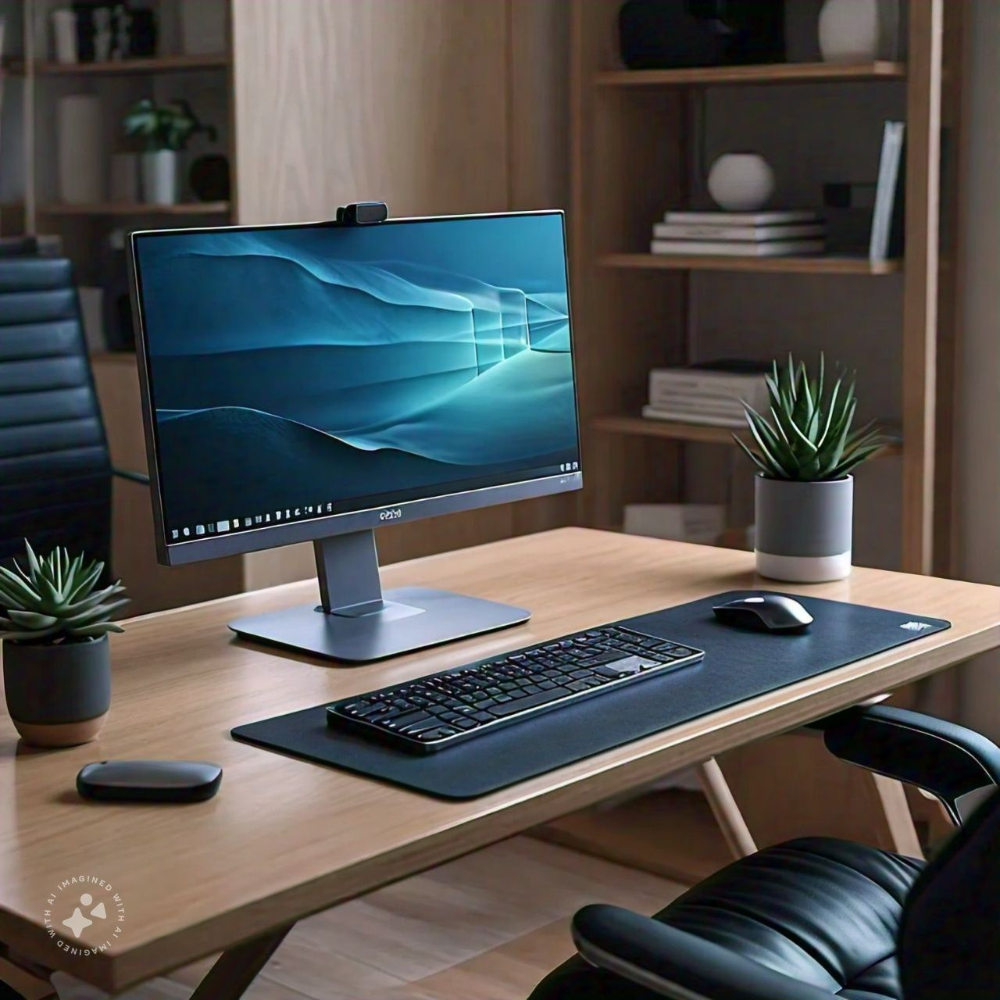
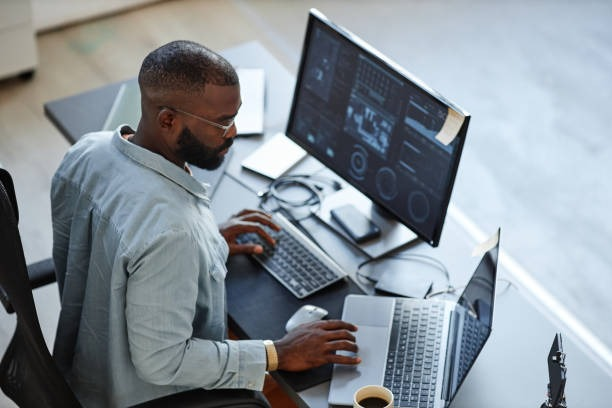

Learn about PCs
4.1 How to Use a PC for Learning
PCs offer a robust platform for deep learning, productivity, and content creation. Follow these steps to effectively use a PC for educational purposes:
Examples of PC Usage

Desktop Computer Setup: A well-organized desk with a desktop computer, monitor, keyboard, and mouse.
Step 1: Set Up Your PC for Learning
- Install Essential Software: Ensure you have necessary software installed, such as Microsoft Office, web browsers, and coding environments like Visual Studio Code or PyCharm.
- Create Folders for Organization: Organize your learning materials into folders like "Courses," "Projects," and "Assignments".
- Sync Data Across Devices: Use cloud storage services like Google Drive or OneDrive to sync your documents across devices.
PC Components: A close-up of PC components like a motherboard and GPU.
Step 2: Customize Your Workspace
- Adjust Display Settings: Configure your screen brightness and resolution for long-term use.
- Manage Notifications: Silence unnecessary notifications to maintain focus while studying.
Step 3: Optimize Your PC for Learning
- Utilize Multiple Desktops: Use this feature to separate study resources from other content.
- Set Up Shortcuts: Use keyboard shortcuts to navigate quickly between applications.
Step 4: Engage with Learning Platforms
- Use E-Learning Platforms: Access platforms like Coursera, Udemy, and Khan Academy on a larger display for better content visibility.
- Participate in Virtual Learning: Use Zoom, Microsoft Teams, or Google Meet for virtual lectures and group study sessions.
4.2 Key Features
- High Performance: PCs are equipped with powerful CPUs, GPUs, and RAM for demanding software.
- Larger Displays: PC screens reduce eye strain for long-term educational use.
- Customizability: PCs can be upgraded with more RAM, better graphics cards, and larger storage.
- Multitasking Capabilities: Run several applications at once, improving productivity.
4.3 Educational Uses
- Programming and Coding: PCs handle IDEs like Visual Studio Code for coding in Python, Java, and C++.
- Research and Writing: Ideal for writing extensive essays, reports, or research papers.
- Content Creation: Programs like Adobe Photoshop and Premiere Pro perform well on PCs.
- E-Learning: PCs make it easy to attend virtual classes, webinars, and collaborate on group projects.
4.4 Tips for Effective Use
- Customize Your PC Settings: Adjust screen brightness and keyboard backlighting for extended study periods.
- Set Up Dual Monitors: Increase productivity by using two monitors.
- Master Keyboard Shortcuts: Save time by learning shortcuts like "Ctrl + C" to copy and "Ctrl + V" to paste.
4.5 Advanced Tips
- Use a Virtual Desktop: Keep study and personal tasks separate on virtual desktops.
- Upgrade Hardware: Upgrade your PC’s RAM, graphics card, or storage for better performance.
- Install Task Automation Software: Automate repetitive tasks with tools like AutoHotkey.

Person Working on a PC: Someone focused on a desktop computer in a study environment.
Explore Courses for PC